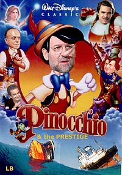
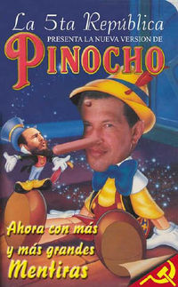

Mentira
 De: La Frikipedia, la enciclopedia extremadamente seria.
De: La Frikipedia, la enciclopedia extremadamente seria.
«La mentira es bonita y la verdad es fea; osease que si tú le dices la verdad a alguien no te lo cree por el contrario, si le dices una mentira si te lo cree»
~ Filósofo chino acerca de la mentira
 Decir que Pinocho es mentiroso es verdad.
 Decir otra vez que Pinocho es mentiroso es mentira.
La mentira es lo contrario de la verdad y el recurso lingüístico más utilizado por políticos. Los filósofos alegaban que no existía una mentira absoluta, sino verdades a medias, lo cual es una sucia mentira, o una sucia verdad a medias. Un síntoma de la mentira es que te crece la nariz, es por esto que se coje antes a un mentiroso que a un cojo.
Mentiras que dicen los políticos
- Bajaremos los impuestos.
- La crisis la ha creado el PP (si eres del PSOE)/ PSOE (si eres del PP).
- No subiremos los impuestos.
- Subiremos las pensiones.
- No hay crisis.
- Si me votáis os
devolveré daré 400€.
- El ...(nombre del partido rival) es el culpable de todos los males de la sociedad.
- El PP roba dinero delas arcas del estado. (Elena Salgado hablando sobre economía).
- Os daré dinero gratis.
- Pondré en los colegios públicos un ordenador para cada dos alumnos.
- No habrá IVA
- Si gano los tratare como si fueran unos reyes.
- Notaran una diferencia grande y os prometo que habrá cambios.
- La verdad es que no pasa nada grave es solo una pequeña epidemia (la mayoría cuando paso el H1N1)
- Yo no miento.
- Yo sí miento (esta no es directamente una mentira pero es usada para confundir).
- Lo hago por el pueblo.
- Soy un hombre de clase media (cualquier político con jet propio).
- Por un mejor mañana (político antes de cagarse el hoy).
- Pero yo también me esfuerzo.
Mentiras que tú dices
- "Tú chupa que yo aviso" cuando tú y tu amigo arregláis la manguera, el amigo tiene que chupar y tú tienes que avisarle si le vas a dar al grifo.
- "Te juro mamá que lo haré mañana".
- "Sí, te estoy escuchando"
haciéndote la paja chateando en el feizbuk.
- "Sólo la puntita" cuando le pides a tu amigo beber un poco de su refresco.
- "Una más y nos vamos".
- "No volveré a hacerlo".
- "Qué lindo canta Justin Bieber" mintiendo acerca de la
voz de marica de mierda horrible y marica voz de Justin Bieber.
- "Soy alto, moreno y guapo" en el chatroullete.
Personajes famosos que mienten
Pinocchio: El chamaquito niño hecho de madera que quería ser humano pero era un gran mentiroso gracias a que cerca de su casa vivía un político.
Zapatero: Dice mentiras y los ciudadanos canis (juventudes del PSOE) le creen.
Rajoy: Una versión de Zapatero en el PP solo que con cara de retrasado y diciendo más mentiras aún.
Hugo Chavez: Tiene a Venezuela pobre por engañar.
Justin Bieber: Cuando dice que no es gay.
Véase También
Autor(es):
- Nexo
- Doctor grijander
- Viento
- ElInventor
- Reo
- Malevola
- Cuatenos
- Cibercrank
- Moctezuma,13
- Dark temptation
Frikipedia 2005-2016, Licencia
GFDL 1.2 - Extraído por FrikiLeaks